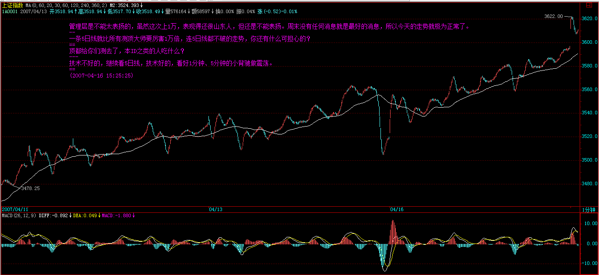
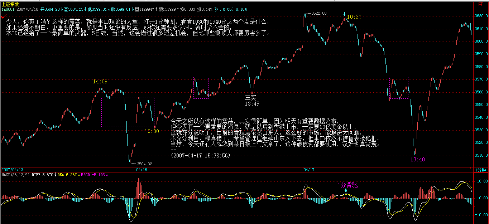
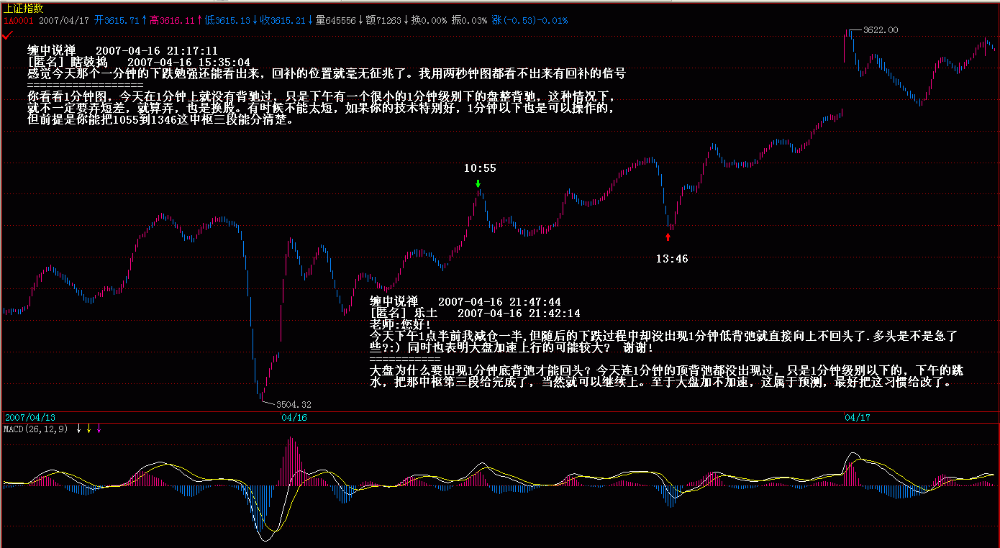
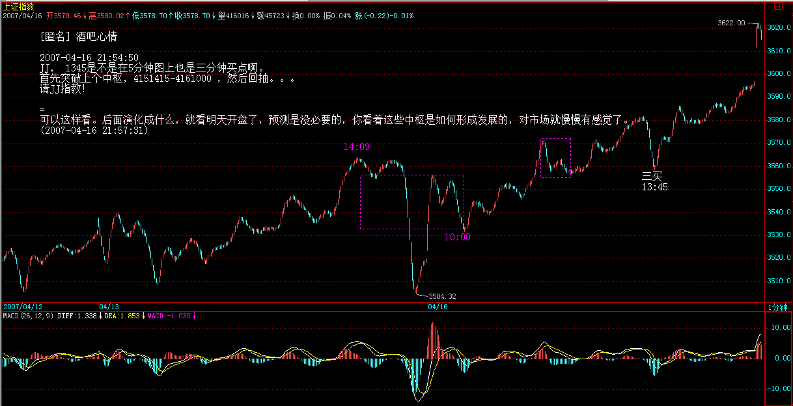
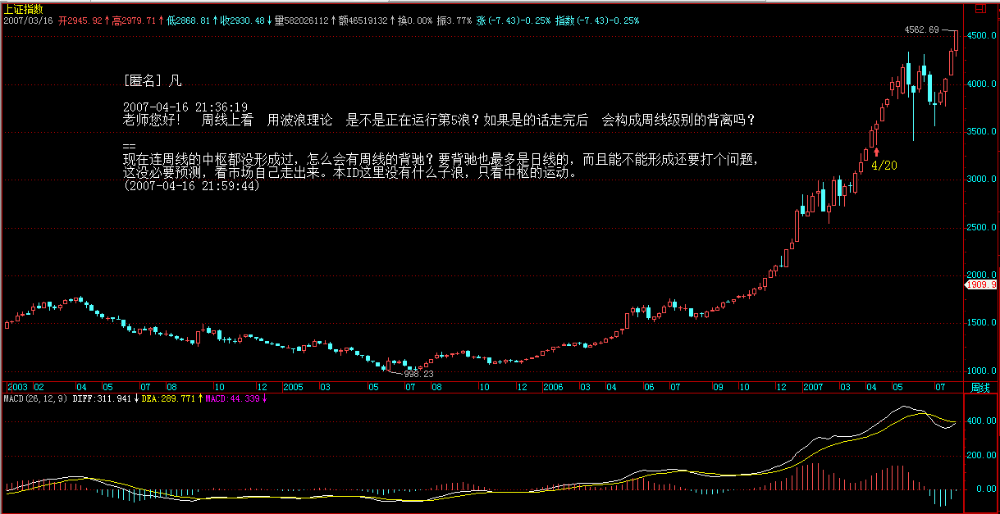
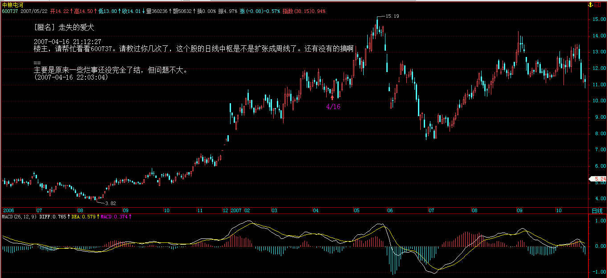
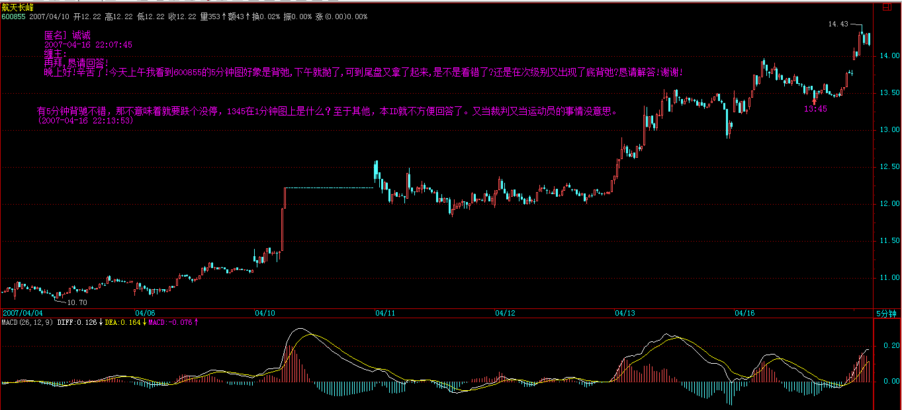
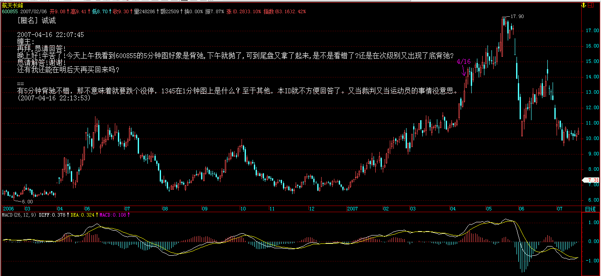

每日解盘 (2007-04-16 15:25:25)
===== 从净资产到市值，大牛市的核变动力 486e105c010009tf=====
管理层是不能太表扬的，虽然这次上 1 万，表现得还很山东人，但还是不能表扬。周末没有任何消息就是最好的消息，所以今天的走势就极为正常了。那些测顶的大师们，如果弄期货，早破产几百次了，所以期货还是不要出来了，免得汉奸都去跳楼。
多次强调，一条 5 日线就比所有测顶大师要厉害 1 万倍，连 5 日线都不破的走势，你还有什么可担心的？ 当然，如果你技术可以，每天都可以利用震荡来换股、打差价。如果技术不行，就看 5 日线吧。至于那些测顶大师，那就继续伸长脖子等大阴线吧，真出大阴线，你们也不敢买，最多就忽悠自己怎么厉害，知道一定会调整，可惜，这些人从 2000 点、3000 点就一直说调整，2 月 27 日也只让你们高兴了一天，你们那天敢买吗？大阴线又和你们有什么关系？现在空仓的，唯一办法就去反省，看是什么心态造成的。偷心不死，自然有这样的结果。有这么大的头，才带那么大的帽子，顶都给你们测去了，本 ID 之类的人吃什么？
本周当然会有震荡，这就像说面首都是男的一样没意义，关键是如何通过震荡减低成本，而不是把震荡当成自己预测如何准确的谈资。股票如面首，是用来操作的，不是用来谈论的。目前，关键还是管理层的态度，只要他们的态度没有明确的打压，那就不会有任何大问题。操作上，追高就没必要了，空仓的就看着吧，好好反省；其余技术不好的，继续看 5 日线，技术好的，看好 1 分钟、5 分钟的小背驰做震荡。 (2007-04-16 15:25:25)

每日解盘 (2007-04-17 15:38:56)
=====《货币战争和人民币战略》续五：从净资产到市值，资本血腥游戏的必然之路 486e105c010009u7=====
今天，你爽了吗？这样的震荡，就是本 ID 理论的天堂，打开 1 分钟图，看看 1030 和 1340 分这两个点是什么，如果还看不明白，更重要的是，如果当时还没有反应，那你还需要多学习。暂时学不会的，本 ID 已经给了一个最简单的武器，5 日线，当然，这会错过很多短差机会，但比那些测顶大师要厉害多了。
今天之所以有这样的震荡，其实很简单，因为明天有重要数据公布，但今天有一个更重要的消息，就是以后到香港上市，一定要 10 亿美金以上，这就充分说明了，目前的管理层依然山东人，这么好的市场，能解决大问题，不充分利用，那真傻了，希望管理层继续山东人下去，但本 ID 依然不准备表扬他们。当然，今天还有人忽悠到某日报上写文章了，这种破伎俩都要使用，汉奸也真窝囊。
但在最顺利时，也必须谨慎，市场永远是风险市场，股票永远是废纸，任何追高杀跌的行为都是自寻死路。明天的数据影响短期走势，如果数据不好，有大的加息预期，则继续震荡也是很正常的，但大方向是不变的，而且，加息是一件很无聊的事情，如果还用，真有病了。
个股方面，没什么可说的，二线拉开空间三线继续，这早说过了。但必须指出，有些人的操作太乱，如果技术不行，难道持有都办不到？像那 14 只里的，今天还一大半再创新高，有多少人拿住了？600578、600777、000915 这些前面特慢的，还有人有吗？前面反复强调过不在 14 只里的那 VC 股，估计没人拿住了吧？中小板的小盘股，中线如何关注，大概也没有人有耐心了。
注意了，那些股票涨太多没买就算了，本 ID 是反对任何追高的，昨晚说过，如果有耐心的，可以去选择估计把业绩搞坏的那些股票，如果公布坏业绩反而走好的，就好好看着，特别那些价位不高的，这种手法，并不难发现，找好买点进去就可以。现在，监管时段，本 ID 也不好说具体的，只能描述一下方向。 (2007-04-17 15:38:56)

===== 周末音乐会 34：能重量的四季生命 486e105c010009sf===== 各位中午好，今天有朋友从外地来，还有些应酬，要先下了。
再见。 (2007-04-15 11:40:30)
===== 从净资产到市值，大牛市的核变动力 486e105c010009tf=====
对不起，马上要外出，有一会议。
晚上 9 点上来。
再见。 (2007-04-16 15:30:39)
对不起，下午有事，刚回来。 (2007-04-16 21:05:29)
[ 匿名 ] IRONCROSS 2007-04-16 15:33:13
缠禅 MM 的语气似乎越来越轻松了． 跟着你学炒股，真的受益万分，万分感激不为过的．
今天开盘就买入了 0912，低市盈率绩优，农业相关，前景广阔，前期调整到位有突破欲望．目前的价位风险很小．这么分析可以吗？
我目前还只是看的到５日线的托儿所水平，很惭愧．
==
5 日线在盘整时用处不大，但在单边中，足以应付最猛烈的情况，会这就足够好了，当然，如果能再进一步，对中枢等有进一步的了解，就可以不用看 5 日线了。 (2007-04-16 21:09:28)
[ 匿名 ] 瞎鼓捣 2007-04-16 15:35:04
感觉今天那个一分钟的下跌勉强还能看出来， 回补的位置就毫无征兆了。 我用两秒钟图都看不出来有回补的信号
==
你看看 1 分钟图，今天在 1 分钟上就没有背驰过，只是下午有一个很小的 1 分钟级别下的盘整背驰，这种情况下，就不一定要弄短差，就算弄，也是换股。有时候不能太短，如果你的技术特别好，1 分钟以下也是可以操作的，但前提是你能把 1055 到 1346 这中枢三段能分清楚。 (2007-04-16 21:17:11)

[ 匿名 ] 傻子
2007-04-16 21:16:34 老师好，今天市场不仅没有降温，反而更加火热了，这样好吗，有点担心阿
==
周五尾盘的下跌就是降温，周末没有利空，这就是最大的利好，还有必要降温给空头回补吗？ (2007-04-16 21:19:27)
[ 匿名 ] AD
2007-04-16 21:15:52 如何判断一个走势类型是次级别的还是次次级别的？
==
日线的次级别是 30 分钟，次次级别是 5 分钟，这都是可以事先确认的。请把前面课程多看几遍。 (2007-04-16 21:20:53)
[ 匿名 ] 新人
2007-04-16 21:32:14 缠姐这是批评 ” 带头 777” 吧 : “ 有这么大的头，才带那么大的帽子，顶都给你们测去了，本 ID 之类的人吃什么？”
==
“ 带头 777” 是谁？本 ID 不针对任何人，也没有任何人值得本 ID 去专门针对，包括孔男人，看他是北大的，给点面子点名骂他，否则他还没资格让本 ID 骂。 (2007-04-16 21:36:14)
[ 匿名 ] 黎民 2007-04-16 15:42:01
今天走势太猛 , 把涨停的上午出了 , 准备继续做差价 , 可只下 2% 不敢接 , 下午开盘不久又封死了 . 只能等待 .
==
思维要转过来，太猛不是走的理由，该猛不猛，或想猛猛不起来，那才是走的理由。 (2007-04-16 21:39:10)
[ 匿名 ] 迷糊 2007-04-16 21:23:19
缠 J 好， 问一个问题，下跌背弛后的第一段反弹走势可以算中枢的第一段吗？
==
为什么不可以？只要不违反结合律，都可以。 (2007-04-16 21:40:56)
星星
2007-04-16 21:24:34 2007-04-13 16:08:41 关于盘整中中枢的理解一直有一点问题，请问楼主： 1、盘整应该只有一个中枢，那么是否可以理解为 a+A+b，其中 a，b 段是必须有的吗？必须是次级别的吗？比如 30 分钟盘整， a，b 为 5 分钟走势，A 为 30 分钟中枢，假定为 A1+A2+A3，三段 5 分钟走势构成的中枢，那么我的问题是，30 分钟的盘整走势最少需要几段 5 分钟走势构成？3 段还是 5 段？
==
你说中枢至少多少次级别构成？
应该是有三段就行。可问题就在这里，比如 30 分钟级别，一段下跌趋势由于背驰完成了，其后走出了 a+A1+A2，都是 5 分钟走势，那么可以看成是一个 30 分钟的中枢完成了，但如果以后有走出了 a+A1+A2+A3+c，然后出现了一个三买宣告盘整的完成，看楼主以前的一些分析，好像这个盘整的中枢又变成了 A1+A2+A3，我在这里很糊涂，请楼主讲一下，谢谢！！
==
三段次级别重叠就形成中枢，后面都是延伸。
那为什么对趋势来说 , 比如 a+(A1+A2+A3)+b+(B1+B2+B3)+c, 为什么不把 a+A1+A2 算作是中枢呢 , 它也是三段次级别重叠的啊 , 此处甚是糊涂 , 请楼主仔细讲一下 , 谢谢 !!!
==
好好去看结合律那节。这些问题都说过。 (2007-04-16 21:43:11)
[ 匿名 ] 乐土 2007-04-16 21:42:14
老师 : 您好 !
今天下午 1 点半前我减仓一半 , 但随后的下跌过程中却没出现 1 分钟低背弛就直接向上不回头了 . 多头是不是急了些 ?:) 同时也表明大盘加速上行的可能较大 ?
谢谢 !
==
大盘为什么要出现 1 分钟底背弛才能回头？今天连 1 分钟的顶背弛都没出现过，只是 1 分钟级别以下的，下午的跳水，把那中枢第三段给完成了，当然就可以继续上。至于大盘加不加速，这属于预测，最好把这习惯给改了。
(2007-04-16 21:47:44)
[ 匿名 ] 开心 2007-04-16 21:34:58
缠妹，晚上好。有二个问题请教。
问题一：4 月 11 日买入隧道股份，13 号停牌公布业绩，在开盘后，以跌停开出，为什么会跌停开盘？怎样判断这类股票的下跌力度？
问题二：今天 000739 普洛康裕开盘后 15 分钟内上涨 17.82%，最高价为 19.88，换手达 28.08% 后，最终上涨 7.06%，收在 17.9，请教缠妹在盘中怎样处理这样在没有背弛的情况下的操作。谢谢！！！！！！！！！
==
级别越小，判断需要的经验与熟练程度越高，所以刚开始学时，别为一些小级别而折腾，这样很容易搞坏心态，如果能把 30 分钟级别的节奏抓住，这市场 95% 的人都不是你对手了。
至于你说那两个例子，都是分笔级别的问题，看盘口摆单与拉升情况，就能把握，但这需要盘口感觉特别好。后面就是小级别转大级别的问题了。
这事情是很公平的，如果你的技术能精确到分笔级别的，你当然就会比别人走得更好，否则，就按小级别对大级别，那么后面还有很多位置是可以走的，或者说是可以打短差的。 (2007-04-16 21:55:18)
[ 匿名 ] 酒吧心情 2007-04-16 21:54:50
JJ， 1345 是不是在 5 分钟图上也是三分钟买点啊。
首先突破上个中枢，4151415-4161000 ，然后回抽。。。
请 JJ 指教！
==
可以这样看。后面演化成什么，就看明天开盘了，预测是没必要的，你看着这些中枢是如何形成发展的，对市场就慢慢有感觉了。 (2007-04-16 21:57:31)

[ 匿名 ] 凡 2007-04-16 21:36:19
老师您好！ 周线上看 用波浪理论 是不是正在运行第 5 浪？如果是的话走完后 会构成周线级别的背离吗？
==
现在连周线的中枢都没形成过，怎么会有周线的背驰？要背驰也最多是日线的，而且能不能形成还要打个问题，这没必要预测，看市场自己走出来。本 ID 这里没有什么子浪，只看中枢的运动。 (2007-04-16 21:59:44)

[ 匿名 ] 走失的爱犬 2007-04-16 21:12:27
楼主，请帮忙看看 600737。请教过你几次了，这个股的日线中枢是不是扩张成周线了。还有没有的搞啊
==
主要是原来一些烂事还没完全了结，但问题不大。 (2007-04-16 22:03:04)

[ 匿名 ] II 2007-04-16 15:40:08
如果技术不行，就看 5 日线吧。至于那些测顶大师，那就继续伸长脖子等大阴线吧，真出大阴线，你们也不敢买，最多就忽悠自己怎么厉害，知道一定会调整，可惜，这些人从 2000 点、3000 点就一直说调整，2 月 27 日也只让你们高兴了一天，你们那天敢买吗？
==
妹妹这话 , 真是个俏皮的丫头 !
我也是死多 ! 2006 年年未加入的死多 .
==
不要当死多，要充分利用自己可以把握的级别震荡去减低成本。死多，最后往往就是上上下下坐电梯，没意义。 (2007-04-16 22:07:03)
[ 匿名 ] 新浪网友
2007-04-16 21:58:58 老师，能不能在经济评论中说说楼市。记得你以前说过，中国房子没有投资价值，说过楼市要股市化，也说过楼市还要涨，到底是怎么情形呢？
==
楼市不实行双轨制，就解决不了问题。楼市的黑幕太多，本 ID 周围的所谓大地产商不少，了解的比较清楚，以后有空再说。 (2007-04-16 22:10:32)
[ 匿名 ] 诚诚 2007-04-16 22:07:45
缠主 : 再拜 , 恳请回答 ! 晚上好 ! 辛苦了 ! 今天上午我看到 600855 的 5 分钟图好象是背弛 , 下午就抛了 , 可到尾盘又拿了起来 , 是不是看错了 ? 还是在次级别又出现了底背弛 ? 恳请解答 ! 谢谢 ! 还有我还能在明后天再买回来吗 ?
==
有 5 分钟背驰不错，那不意味着就要跌个没停，1345 在 1 分钟图上是什么？至于其他，本 ID 就不方便回答了。又当裁判又当运动员的事情没意思。 (2007-04-16 22:13:53)
 
[ 匿名 ] 也许认识你 2007-04-16 22:11:14
博主，我好像明白了 我的问题是不是也用结合律解决？ 买 3 的下跌中枢，前面 3 段可以看作盘整，再和后面的 1 分走势组合，看作下跌？ 中枢也是如此结合，次级（上涨＋下跌＋上涨），开始看作中枢，上涨＋（下上下），后面 3 段结合为中枢？
==
结合律可以让你多角度看问题，综合起来就准确了。但注意，在同一分解中，不能用不同的结合，这样就乱套了。 (2007-04-16 22:15:59)
个股方面，如果从中线的角度，多注意一下那些估计报亏损，或业绩故意不好的股票，这些股票都是有预谋的，先可以不买，但一定要关注，已经有不少股票玩这招数，后面这类股票会越来越多，特别在很多人踏空的情况下，很多人会用这种招数骗筹码。
太晚了，必须下了，再见。 (2007-04-16 22:19:10)
=====《货币战争和人民币战略》续五：从净资产到市值，资本血腥游戏的必然之路 486e105c010009u7=====
[ 匿名 ] 参禅 2007-04-17 15:45:11
最简单的武器，5 日线 ——— 记住了。
是单边走势，盘整中，用处不大。 (2007-04-17 15:46:14)
[ 匿名 ] 新年好 2007-04-17 15:39:22
今天太感谢缠姐了，让我买了 416。
==
416，14 只里面第二批，在 2、3 元就让各位买，有谁能拿到现在？靠涨停板是挣不了大钱的。 (2007-04-17 15:48:46)
[ 匿名 ] 缠心雕龙 2007-04-17 15:40:42
博主好。 有关背驰的级别问题有些拿不准。a+A+b 走势，其中 a、b 是 5f 走势，A 是 30f 中枢，若 a、b 发生盘背，则这个盘背是 30f 级别的，对吗？这个盘背通常看 30f 图来判断。 那么，同级分解操作中，若 Ai 是 5f 走势，则 Ai+2 和 Ai 发生盘背，这个盘背是什么级别的？也是 30f 级别的吗？这个盘背一般是看 30f 图判断还是看 5f 图判断？
==
你事先以什么图为前提，这就涉及预测，是不对的。应该是在什么级别图上看到背弛就是那级别的，当然，一般你说那种情况，都会在 30 分钟图上看到，但这是两种不同的思维方式。 (2007-04-17 15:53:11)
[ 匿名 ] 新年好 2007-04-17 15:50:32
1030 和 1340 这两个点现在看是很明显，可是前几天都是在 10：52 那个点的样子就直接拉上去了，谁知道今天又来一波下跌。我就是在 10：52 左右的时候就回补了，而且还满仓，搞得后来跌了也没钱买了。 缠姐如果判断今天这个第二波下跌啊？
==
那些所谓一波就结束的，是构成整个中枢的一部分，性质不同，不能搞混了。 (2007-04-17 15:55:04)
[ 匿名 ] 百思不解 2007-04-17 15:44:27
楼主好！
即使本级按同级分解规则，但次级以下还要实行非同级分解规则，这样非同级分解在实践中无论如何都绕不过去。感觉以前讲的很多内容理解不好，实际上是对非同级分解规则不清楚，难免产生很多误解得离谱的问题。非同级分解原则还应该有很多细节的，也是实践中模糊的地方，影响对走势的解读。还请楼主指教非同级分解的原则。
16 课中讲到的反转式、中继式、陷阱式这三类走势组合，能代表所有分解情况吗？ 以向上的中继式为例（上涨＋盘整＋上涨），其中的 “ 上涨 ” 一定是趋势吗？上涨的级别可以比盘整的级别低两级以上吗？
==
这在上两节都说了，小级别变大级别如何分解，背弛级别一样的如何分解，都说了，都是从背弛点开始分开。 (2007-04-17 16:03:35)
[ 匿名 ] II
2007-04-17 15:57:15 缠中说禅
2007-04-17 15:38:56 今天，你爽了吗？这样的震荡，就是本 ID 理论的天堂
== 缠 MM：
今天，我爽了！现实的人间，理论的天堂！！
上午 11：30 补一次，下午 13：40 补一次。
可我想问一下妹妹，分时图怎么来看背驰呐？在公司，只有分时图。 妹妹，如果这样问题能帮我回答，那就解决了我目前最大的困难了。。。
妹妹，你就是我们的天堂：）
==
看 1 分钟图就可以，如何是 1 分钟级别以下的，光看柱子面积。 (2007-04-17 16:06:35)
[ 匿名 ] 新年好
2007-04-17 16:05:44 缠中说禅
2007-04-17 15:48:46 [ 匿名 ] 新年好
2007-04-17 15:39:22 今天太感谢缠姐了，让我买了 416。
==
416，14 只里面第二批，在 2、3 元就让各位买，有谁能拿到现在？靠涨停板是挣不了大钱的。
缠姐教育的对啊，我就是一直拿不住，关键是总是看背驰卖了，不知道回补，换成别的了，就这样换来换去，一直操作很失误。我以后一定要改掉这个毛病。 还有 “ 前面反复强调过不在 14 只里的那 VC 股，”，那位告诉一下是哪只，我不记得了。不是紫光吧？
==
紫光是 14 只里面的，好象那股票都应该知道，谁是中国目前最大的 VC，谁有是他的股东，显然只有一个答案，大众，当时才 5 元多，有谁能拿到现在？没买就算了，别追高。 (2007-04-17 16:09:51)
最好别问具体个股的问题，这里耳目众多，本 ID 说多了，又说本 ID 操纵什么，不能畅所欲言，干脆都别说了。 (2007-04-17 16:11:33)
[ 匿名 ] 后知后觉
2007-04-17 16:11:35 禅主：我复制第 5 遍了：
今天爽了，最近天天都在爽。
要资本主义死，就要资本主义亢奋无比，进而精尽人亡。那么，资本主义逐步亢奋的把戏又是什么？” 这句话用在当前的行情同样适用。 很多股票正在这样走。
市场就像有手一样，而本人愚钝却也清晰的感受到它的脉动，在群里说了 3550 点注意支撑力度，当它第一次反弹的时候，也告诉了群里同学，注意反弹的方式是否和第一次一样。今天的 1 分钟走势，有人为的迹象在里边，不过还是可以清晰的看到市场的脉络，毕竟，它起来的方式不一样了。
加息不可怕，虽然无聊，还是会加的，或许循环的加下去，但每次股市都不是在这样的打压中见顶的，还是看市场。在兴奋的时候，没什么能阻止爽，阻止干。关键是什么时候高潮的问题了。
我不猜忌什么，您提到的股票，我提供几个：000802，600198，000598。
最后，提个问题，禅主，帮助分析一下 000616，它要增发，管理层给否了。帮我分析一下。 谢了！
==
看走势，走势反应一切。你觉得这样的走势会有问题？ (2007-04-17 16:14:34)
[ 匿名 ] 黄土高坡的白杨 2007-04-17 16:18:26
博主，我是缠论初学者。特请教：
600607 上实医药在日线上 3 月 1 日到 3 月 13 日形成日线中枢，之后中枢延伸，4 月 11 日突破该中枢，目前如果 30 分钟回试不跌破 14.82，则形成日线第 3 类买点。对吗？谢谢！
==
不对 (2007-04-17 16:24:46)
[ 匿名 ] 启程 2007-04-17 16:22:34
再问缠师一个问题，喜欢邮票吗？邮市健康吗？
==
不要当上帝，上帝才考虑所谓的健康问题。市场就是市场，与健康无关。 (2007-04-17 16:26:45)
对不起，4 点半了，要下，晚上还有很多事情。
再见。 (2007-04-17 16:32:07)